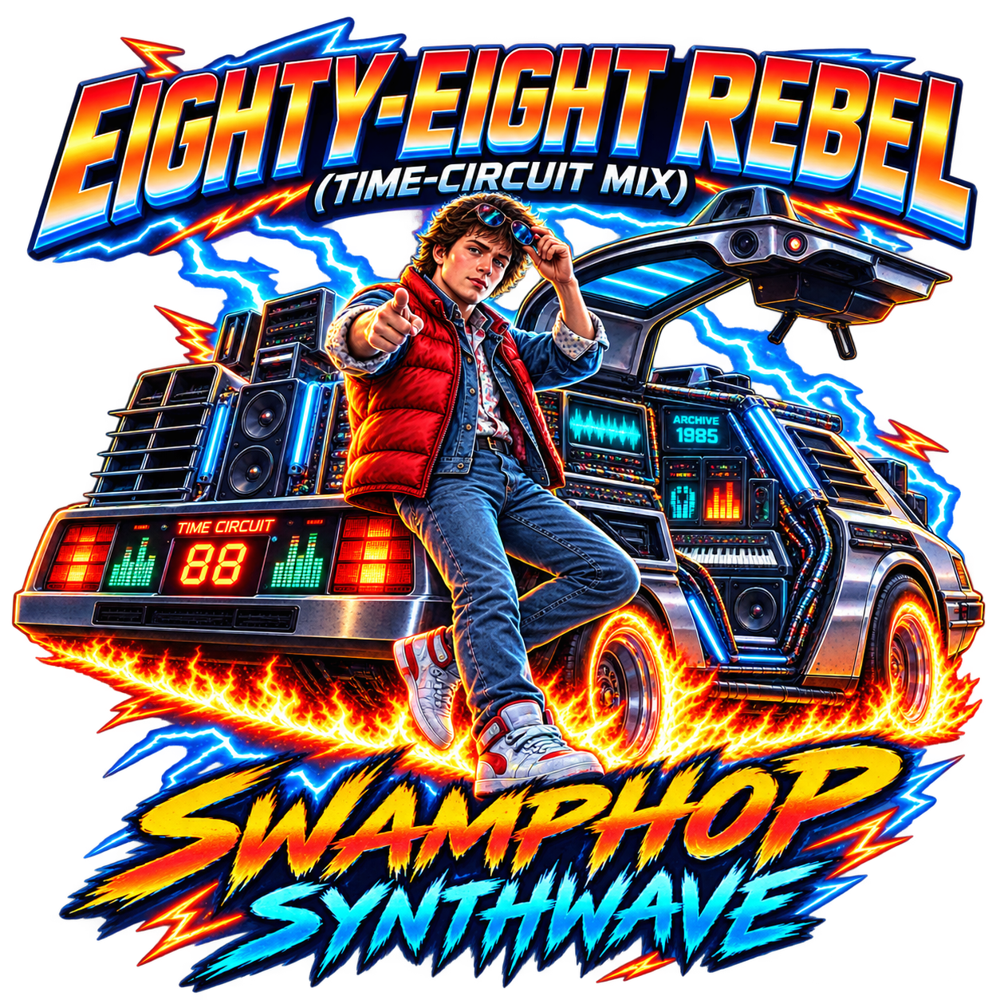

1985 ↔ 3026Future's Past // numbered archive
Eighty-Eight Rebel
The first numbered Time Circuit transmission: 88 BPM with one foot in 1985 and the other somewhere past 3026.
FUTURE'S PAST / 88 BPM
Numbered Circuit
Missing numbered masters stay visible and fail closed. The player never substitutes an archive cut for TC-02 or TC-03.
RECOVERED SIGNAL / WRONG CENTURY
Archive Cuts.
Older Time Circuit experiments, source renders, and side-channel transmissions live here without changing the TC-01 through TC-04 numbered sequence.
Open analyzer notes ↗THE TIME CIRCUIT / FUTURE'S PAST
Wear the timeline.
Six approved Future's Past designs. Time Circuit accepts only canonical hoodie records assigned to this destination; no generic Apparel fallback and no provider IDs in the browser.
FUTURE'S PAST HOODIES
Choose your timeline.
The Northline store pattern, rebuilt for the Time Circuit capsule: large art, direct variant selection, Add to Bag, and a slide-over cart.
avp_* and avv_* identity may enter the browser; Square/provider identity may not. Bagging can happen locally, but checkout stays gated until the NXCore Commerce handoff is deployed and verified.